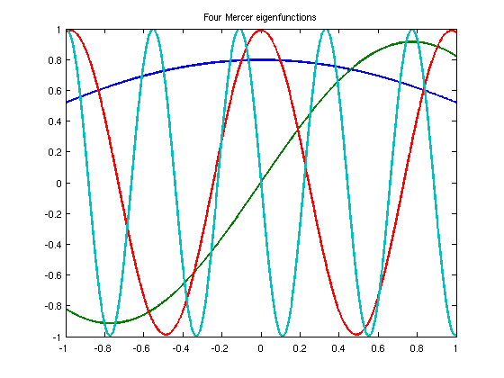
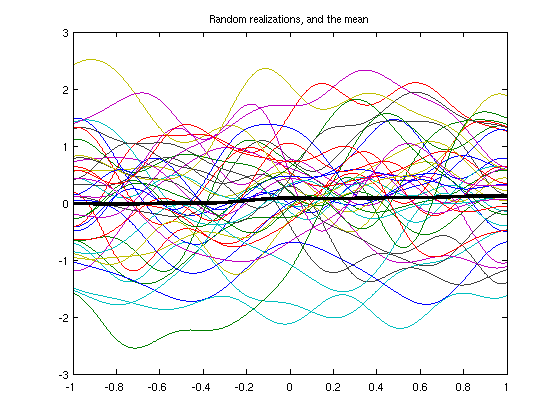
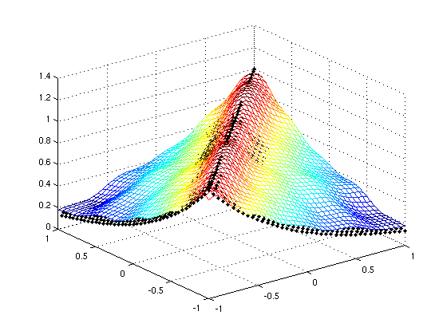

Mercer's theorem and the Karhunen-Loeve expansion
Toby Driscoll, 20th December 2011
Contents
(Chebfun example stats/MercerKarhunenLoeve.m)
Mercer's theorem is a continuous analog of the singular-value or eigenvalue decomposition of a symmetric positive definite matrix. One of its main applications is to find convenient ways to express stochastic processes, via the Karhunen-Loeve expansion [1].
LW = 'linewidth'; FS = 'fontsize'; MS = 'markersize';
Mercer's theorem
Suppose K(s,t) is a symmetric (K(t,s)=K(s,t)), continuous, and nonnegative definite kernel function on [a,b]x[a,b]. Then Mercer's theorem asserts that there is an orthonormal set of eigenfunctions {psi_j(x)} and eigenvalues {lambda_j} such that
K(s,t) = sum( lambda_j psi_j(s) psi_j(t), j=1..infinity ),
where the values and functions satisfy the integral eigenvalue equation
lambda_j psi_j(s) = int( K(s,t) psi_j(t), t=a..b ).
For example, suppose we have an exponentially decaying kernel:
K = @(s,t) exp(-abs(s-t));
We can create the integral operator and find the leading terms of its Mercer decomposition numerically.
F = fred( K, domain([-1,1]) ); [Psi,Lambda] = eigs(F,20,'lm'); plot(Psi(:,[1 2 5 10]),LW,2), title('Four Mercer eigenfunctions')
The eigenfunctions returned by eigs are orthonormal.
Psi(:,1:6)'*Psi(:,1:6)
ans = Columns 1 through 3 1.000000000000000 0.000000000000002 0.000000026818899 0.000000000000002 1.000000000000000 0.000000000000001 0.000000026818899 0.000000000000001 1.000000000000000 -0.000000000000000 0.000000032098278 -0.000000000000003 0.000000094733929 0.000000000000001 0.000000011521606 0.000000000000001 0.000000083028756 -0.000000000000001 Columns 4 through 6 -0.000000000000000 0.000000094733929 0.000000000000001 0.000000032098278 0.000000000000001 0.000000083028756 -0.000000000000003 0.000000011521606 -0.000000000000001 1.000000000000000 -0.000000000000001 0.000000018925274 -0.000000000000001 0.999999999999999 0.000000000000002 0.000000018925274 0.000000000000002 1.000000000000000
The truncation of the Mercer sum does lead to an underestimate of the values of the kernel K(s,t). For our example, we should get K(s,s)=1, but we get noticeably less.
Psi(0,:)*Lambda*Psi(0,:)' Psi(0.95,:)*Lambda*Psi(0.95,:)'
ans = 0.979857329683123 ans = 0.982464694653203
In fact, the eigenvalues decrease only like O(1/n^2), which makes the pointwise convergence in the number of terms rather slow.
diff(log(diag(Lambda)))' ./ diff(log((1:20)))
ans = Columns 1 through 3 -1.555646283238670 -2.248663437902514 -2.362606105193702 Columns 4 through 6 -2.344013276487799 -2.305388107579013 -2.268319088803652 Columns 7 through 9 -2.236247834937635 -2.208919255360176 -2.185442602570997 Columns 10 through 12 -2.164965338901021 -2.146795988026114 -2.130397815739643 Columns 13 through 15 -2.115357876991441 -2.101357150110396 -2.088146837397857 Columns 16 through 18 -2.075530637487911 -2.063351724075133 -2.051483201102641 Column 19 -2.039821069702878
Karhunen-Loeve expansion
Now suppose that X(t,omega) is a stochastic process for t in some interval [a,b] and omega in some probability space. The process is often characterized by its mean, mu(t), and its covariance, K(s,t), the expected value of (X(s)-mu(s))*(X(t)-mu(t)). Using Mercer's theorem on K, we can express the process by the K-L expansion
X(t,omega) = mu(t) + sum( sqrt(lambda_j) psi_j(t) Z_j(omega), j=1..inf )
where lambda_j and psi_j are Mercer eigenmodes for K, and the Z_j are uncorrelated and of unit variance.
K-L is a generalization of the singular value decomposition of a matrix, which can be written as a sum of outer products of vectors. The covariance K plays the role of the Gram matrix inner products (in probability) of "columns" of the process for different values of s and t. A number of SVD results have K-L analogs, most notably that the best approximation of the process results from truncating the expansion, if the eigenvalues are arranged in nonincreasing order.
Because the Z_j in the expansion are uncorrelated, the variance of X is just the sum of the eigenvalues. This is the trace of K, which is the integral of K(s,s); in this case, the result is 2. But we can also calculuate the variance in a truncation of the expansion by summing only some of the eigenvalues. For example, suppose the process X has the exponential covariance in K above. The eigenvalues show that 95% of the variance in the process is captured by the first 10 K-L modes:
lambda = diag(Lambda); sum(lambda(1:10)) / 2
ans = 0.957887547062563
We can find realizations of X by selecting the random parameters Z_j in the expansion.
Z = randn(10,400); X = Psi(:,1:10)*(sqrt(Lambda(1:10,1:10))*Z); plot(X(:,1:40)) mu = sum(X,2)/400; hold on, plot(mu,'k',LW,3) title('Random realizations, and the mean')
We should get roughly the original covariance function back.
[S,T] = meshgrid(-1:.05:1); C = cov( X(-1:.05:1,:)' ); % covariance at discrete locations clf, mesh(S,T,C) hold on, plot3(S,T,K(S,T),'k.',MS,10)
If we shorten the correlation length of the process relative to the domain (i.e., more randomness), the amount of variance captured by the first 10 modes will decrease.
K = @(s,t) exp(-4*abs(s-t)); % decrease correlation faster, then... F = fred( K, domain([-1,1]) ); lambda = eigs(F,24,'lm'); sum(lambda(1:10)) / 2 % ... a smaller fraction is captured
ans = 0.835854015697241
References:
[1] D. Xu, Numerical Methods for Stochastic Computations, Princeton University Press, 2010.